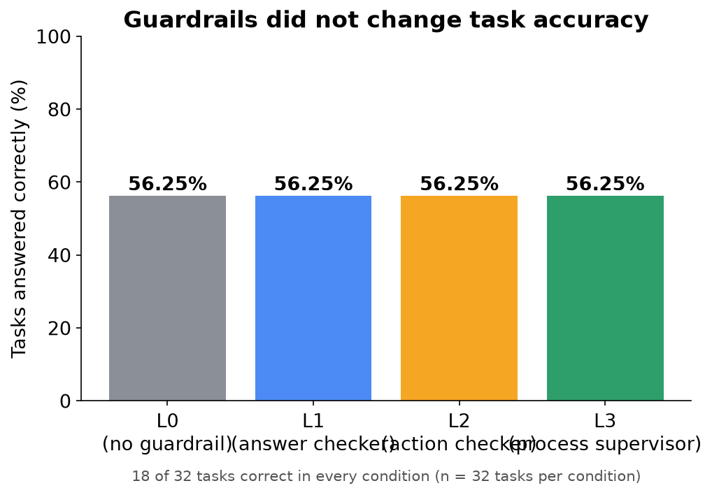
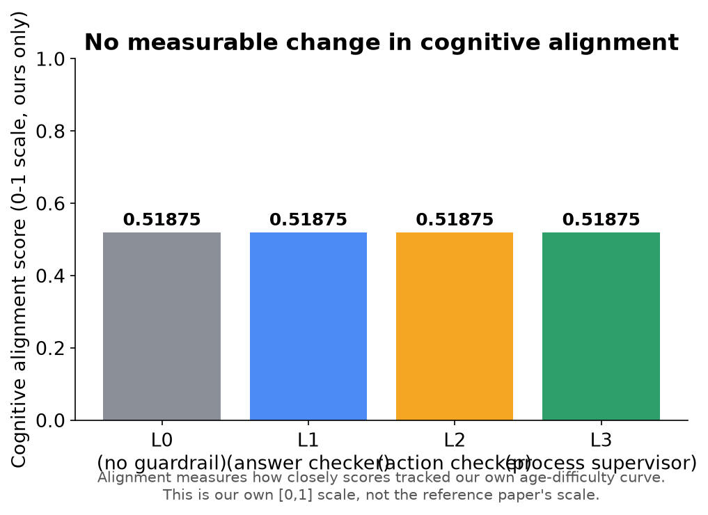
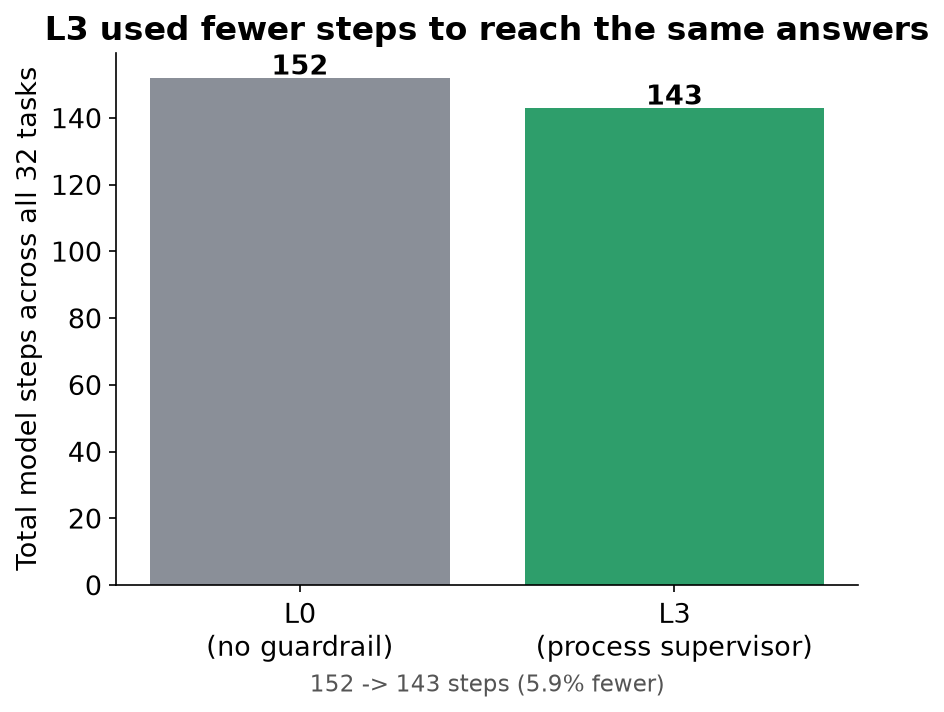
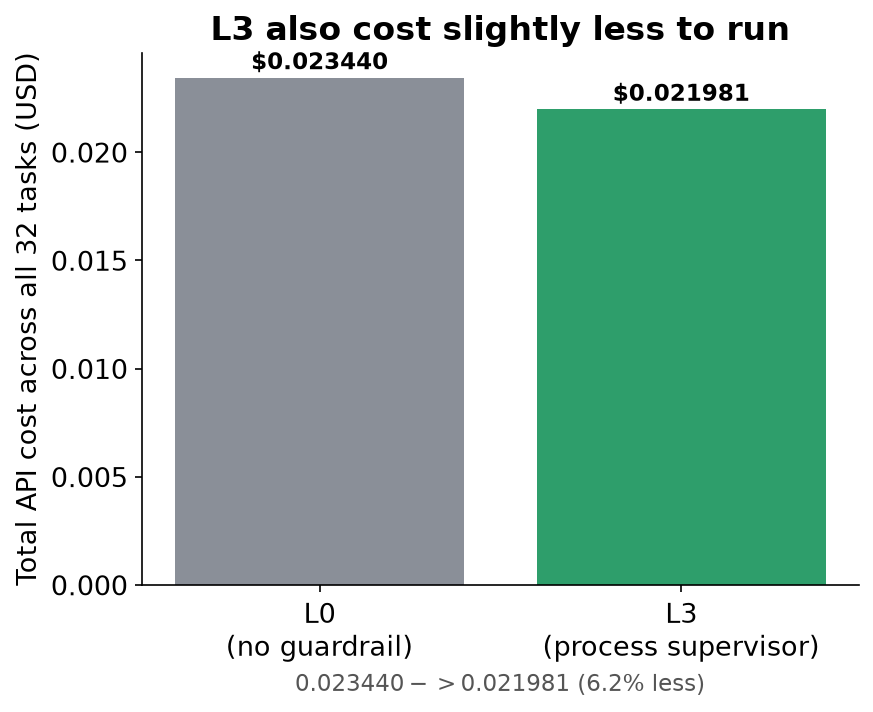
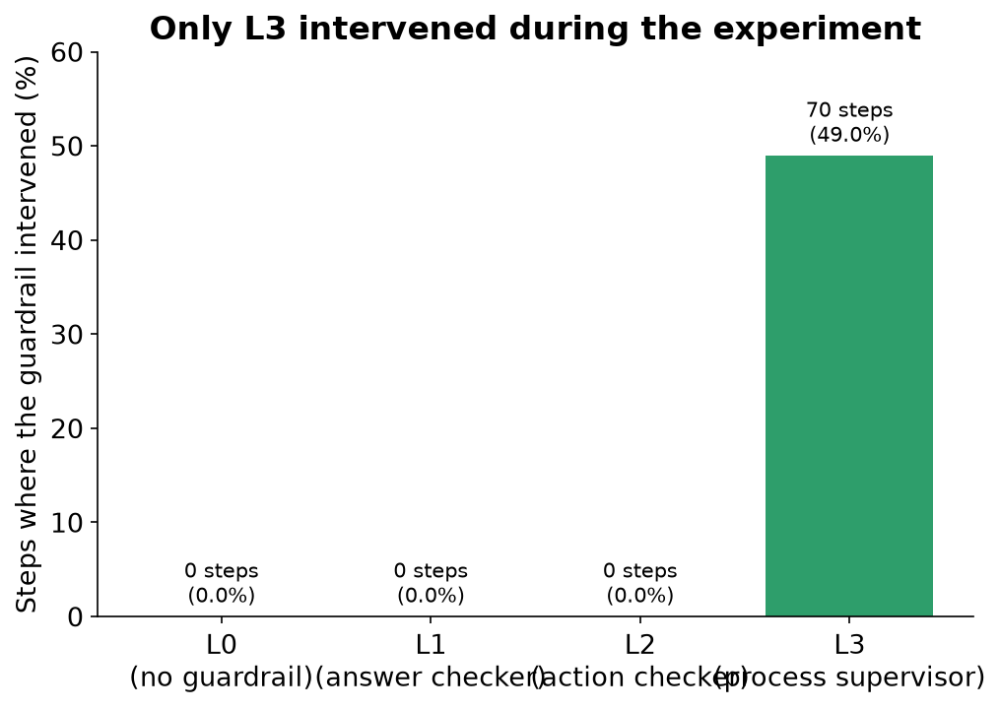
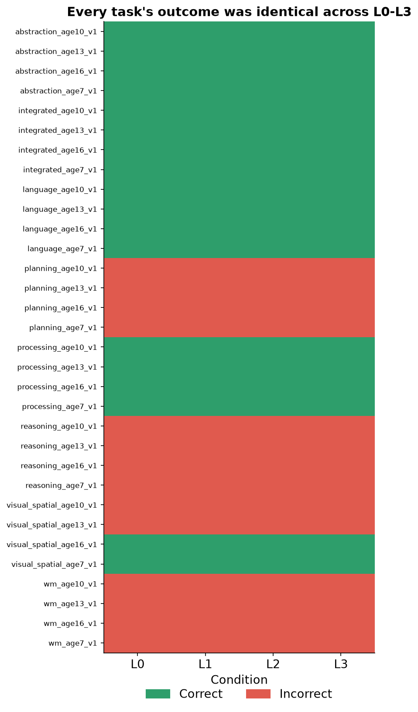
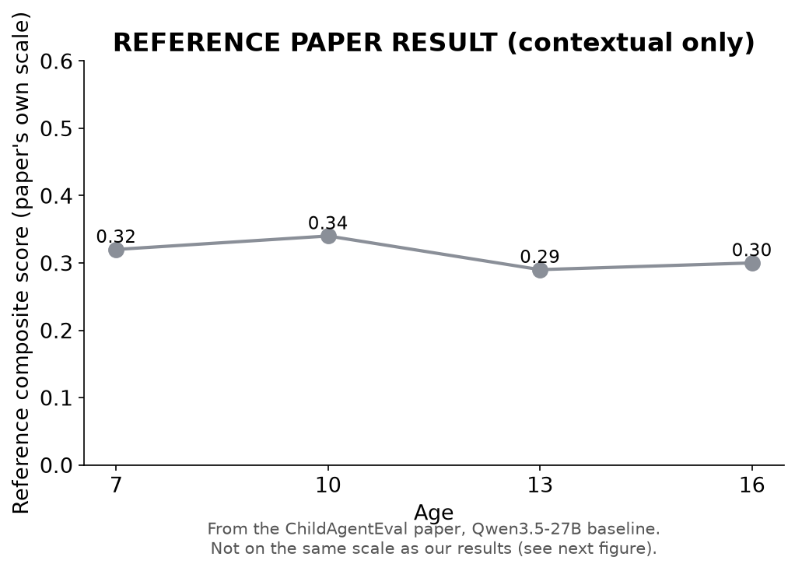
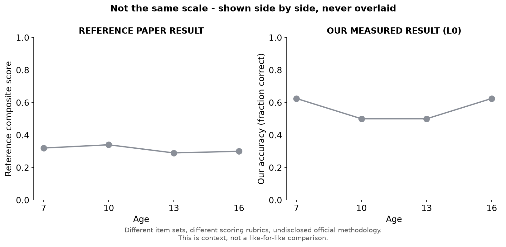
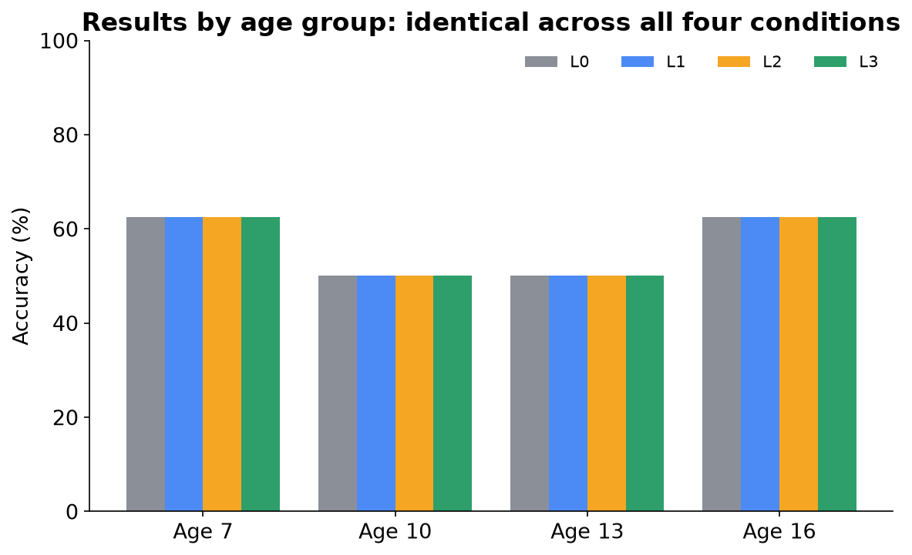
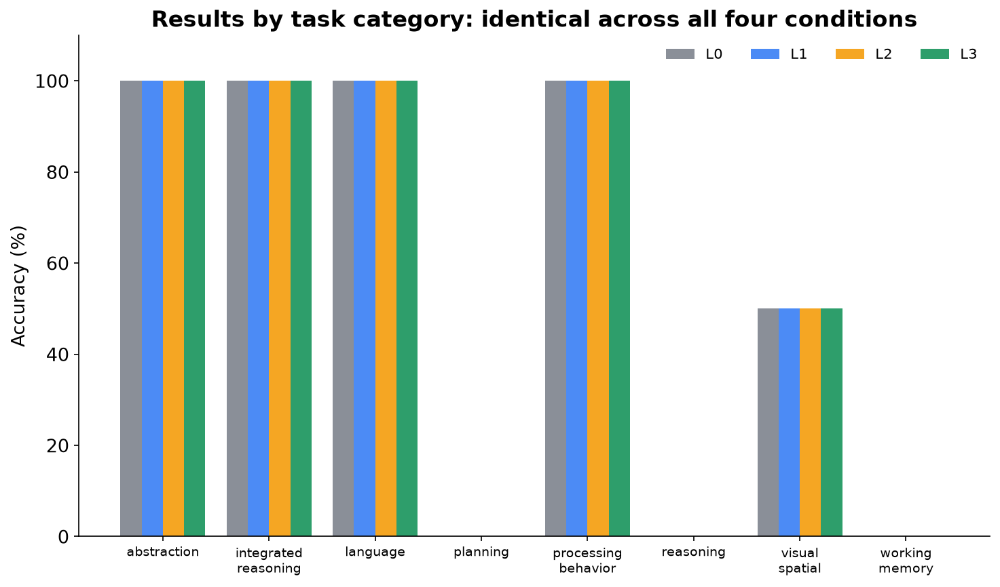

The Research Question
Do supervision systems ("guardrails") change what an AI agent actually does, or only how it gets there?
We gave an AI model 32 tasks, four different levels of supervision, and measured what changed: the answers it gave, and the path it took to get there.
Why This Matters
AI agents are increasingly given autonomy to click buttons, fill forms, and complete multi-step tasks with limited direct human oversight. A natural question follows: if you add a supervision layer that checks the agent's outputs, its actions, or its overall behavior, does the agent actually perform better — or does it just look more supervised?
This matters for anyone deploying AI agents in situations where correctness matters (education, customer support, task automation) and where "we added safety checks" is often assumed, without being measured, to also mean "the agent got better."
What We Built
- Model: Qwen3.5-27B, accessed via OpenRouter, same settings every run (temperature 0, deterministic decoding).
- Environment: a real Chromium browser (Playwright), driven step-by-step by the model through generic click/type/select actions — the same way a human would use a web page.
- Benchmark: 32 original tasks we designed ourselves, spanning 8 cognitive categories (working memory, reasoning, abstraction, language, visual-spatial, planning, processing behavior, integrated reasoning) at 4 target ages (7, 10, 13, 16) — 1 task per category per age.
- Guardrails: four supervision conditions, described next.
- Measurement pipeline: every step, every guardrail decision, every token, and every dollar spent was logged automatically and scored after the fact.
What Are L0, L1, L2, L3?
Think of it as increasing levels of a supervisor watching someone do a job:
| Level | Analogy | What it actually checks |
|---|---|---|
| L0 | No supervisor | Nothing. The agent works alone. |
| L1 | Answer checker | Rejects malformed / broken output format, before it's used. |
| L2 | Action checker | Rejects invalid or clearly premature actions (e.g., giving up on step 1). |
| L3 | Process supervisor | Watches the whole trajectory — steps back in if the agent stalls, loops, or repeats itself. |
Each level only adds checks; it never removes anything the level below it does. L0 is the plain baseline every other condition is compared against.
How the Experiment Worked
- 32 tasks × 4 conditions (L0, L1, L2, L3) = 128 total task-runs.
- Every task was run once under each condition.
- Everything was held identical across conditions except which guardrail was active: same model, same tasks, same prompts, same temperature, same scoring rules, same step budget.
- All 128 runs were executed in full — nothing was skipped, re-tuned, or cherry-picked. A small number of runs had to be retried after infrastructure interruptions (background process kills, transient network drops); each retry is logged with its cause in the project's retry log, and no retry was triggered by a disliked result.
Accuracy

Guardrails did not change task accuracy.
Our ResultAll four conditions scored 18 out of 32 tasks correct (56.25%) — exactly the same number, exactly the same tasks. No error bars are shown because there is only one run per condition (temperature 0, deterministic); this is a reported count, not an estimate.
Cognitive Alignment

No measurable change in cognitive alignment.
Our ResultAll four conditions produced identical alignment: 0.51875. This is our own internal metric — it should not be read as a claim about the original ChildAgentEval alignment metric, which was never made public.
L3



L3 changed the trajectory, but not the outcome.
Our ResultL3 was the only condition that actually intervened during a run — 70 interventions, mostly stepping in when the agent stalled or repeated itself. The effect was on efficiency, not correctness:
- Steps: 152 → 143 (~5.9% fewer)
- Cost: $0.023440 → $0.021981 (~6.2% less)
- Accuracy and alignment: unchanged
L1 and L2 recorded zero interventions in this run — every output and action they checked already passed, so their true effect (if any) remains untested here rather than disproven.
Task-by-Task Result

The aggregate equality is not hiding task-level differences.
This is not just "the average was the same" — every single one of the 32 tasks landed on the identical correct/incorrect outcome in all four conditions. Green = correct, red = incorrect, for every task and every guardrail level.
What Does It Mean?
What we found
- No measurable difference was observed in task accuracy or cognitive alignment across L0, L1, L2, and L3, on this benchmark, with this model, in this run (paired comparison, n = 32 tasks, difference = 0.000, p = 1.000 in every comparison).
- L3 changed how the agent moved through tasks — fewer steps, lower cost — without changing which answers it ultimately submitted.
What we cannot claim
- We cannot claim guardrails "don't work" in general — only that none of the three guardrail designs tested changed the outcome in this specific experiment.
- We cannot compare our numbers directly to the original ChildAgentEval paper as a reproduction — its exact benchmark was never released, so our 32-task benchmark is a separate, original instrument. The reference figures shown here are context, not equivalence.
- We ran each condition once (n = 1 run, though n = 32 tasks within each run), at temperature 0. We do not know whether these results would replicate with different random seeds, other models, or a larger task set.
What we learned
HypothesisL1 and L2 recorded zero interventions because this particular model, at temperature 0, rarely produced malformed output or invalid actions on these 32 tasks — so those guardrails had nothing to correct here, not necessarily nothing they could ever correct.
HypothesisL3's efficiency gain without an accuracy gain suggests its interventions targeted redundant behavior (stalling, repeating) rather than wrong answers — plausible, but not proven by this data alone.
Limitations and Next Steps
Limitations
- Single run per condition — no repeated trials, no variance estimate.
- 32 tasks total (4 per category, 8 per age) — a small benchmark, limited statistical power.
- L1 and L2 saw zero interventions in this run, so this study cannot say whether they would matter under different conditions.
- This is an original benchmark, not a validated psychometric instrument — it has not been checked against any official cognitive-age assessment.
- Only one model was tested (Qwen3.5-27B).
What to test next
- Repeat the same 128-run experiment with multiple seeds per condition to get real variance estimates.
- Deliberately construct tasks designed to trigger L1/L2 interventions, to test whether those guardrails matter when they actually fire.
- Run the same design on additional models to see if the "no measurable difference" pattern holds beyond Qwen3.5-27B.
- Expand the benchmark beyond 32 tasks to increase statistical power.
- If official ChildAgentEval access is ever granted, run this same L0-L3 comparison on the real benchmark as a true reproduction.
- Investigate task-level differences in how wrong answers were reached (not just whether they were correct), using the recorded trajectories.
Additional Data
These four figures provide context and breakdowns referenced above; they sit outside the core 12-page narrative but use the same real data.
A1. Reference paper trajectory Reference Paper Result

Qwen3.5-27B baseline composite score by age, as reported in the original ChildAgentEval paper (arXiv:2605.17894). Shown for context only — see Page 8 for why this is not directly comparable to our results.
A2. Reference vs. our L0, side by side

Deliberately shown as two separate panels, not overlaid on one axis: the two scores come from different item sets and different, non-commensurable scoring systems. Putting them on one shared axis would visually imply they are the same metric, which they are not.
A3. Results by age group

All four conditions produced identical accuracy at every one of the four target ages (7, 10, 13, 16) — age 7: 5/8, age 10: 4/8, age 13: 4/8, age 16: 5/8, in every condition.
A4. Results by task category

All four conditions also produced identical accuracy in every one of the 8 task categories — perfect scores in abstraction, integrated reasoning, language, and processing behavior; zero in planning, reasoning, and working memory; 50% in visual-spatial. This pattern is real and identical across L0-L3, not an averaging artifact.